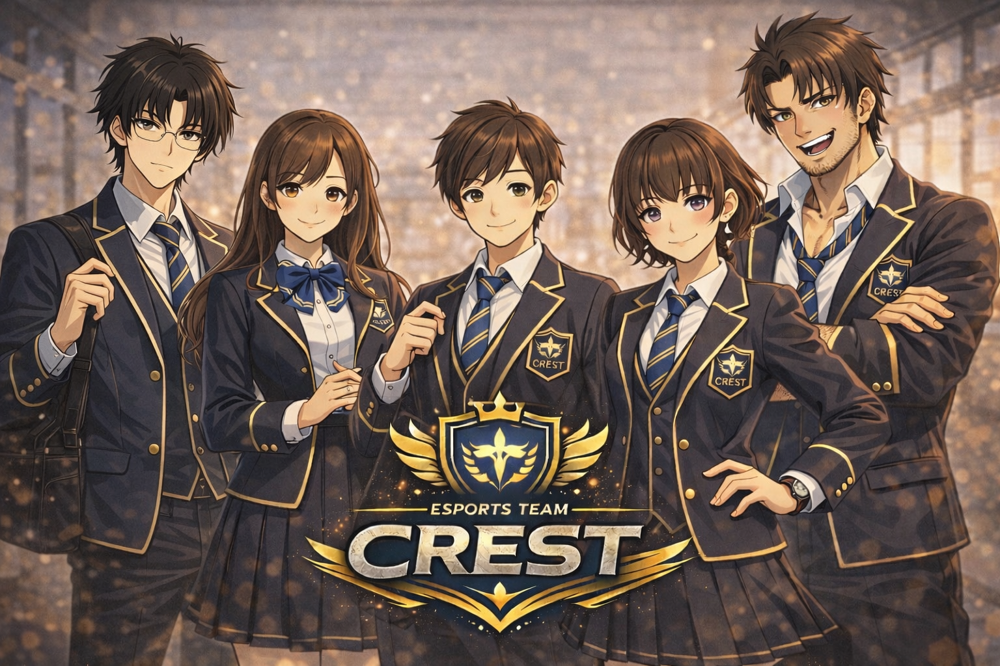
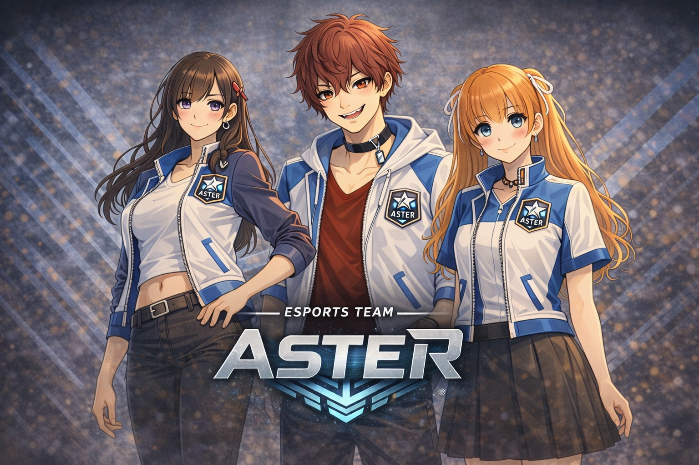

Riot
試験編成から始まった四人のチーム。ぶつかりながらも、自分たちの戦い方を見つけていく。
LAST SIGNAL YOUTH ESPORTS STORY
Riot、Crest、Aster。
三つのチームと十二人の高校生が、競技と日常のはざまで揺れながら駆け抜ける青春群像劇。
eスポーツ競技「Last Signal」に打ち込む高校生たちの、青春と恋と進路の物語。
学校に試験的に組まれたチームだったRiotは、千鶴、碧、栞那、龍太の四人で戦い続けるうちに、誰にも代えがたい“自分たちのチーム”になっていた。 そんなRiotの前に立つのは、朝霧高校のCrest、星乃宮高校のAster。 三つのチームは夏合宿や交流試合、レイカ杯を通してぶつかり合い、競技の中で互いを知り、少しずつ日常の中にも入り込んでいく。
感覚で勝ち筋を掴む千鶴。千鶴を誰より近くで支える碧。 理性的な暁が目を奪われたのは、千鶴の誰にも読めない一手だった。 仲間として、ライバルとして、そして特別な誰かとして。 勝ちたい気持ちの隣で、それぞれの恋心もまた静かに形を変えていく。
やがて彼らの前には、レイカ杯だけではなく、その先の進路も現れる。 プロへの誘い、進学、チームの終わりと新しい始まり。 選ばなければならない未来の中で、それでも彼らは、自分たちで掴みたいものを見つけていく。
これは、Aster、Crest、Riot――三つのチームと十二人の高校生たちが、 競技に、恋に、仲間に、本気で向き合いながら駆け抜ける青春群像劇。
試験編成から始まった四人のチーム。ぶつかりながらも、自分たちの戦い方を見つけていく。

朝霧高校代表。連携と安定感を武器に、Riotの前に立つ強豪チーム。

星乃宮高校代表。試合運びの巧さと攻撃的な勝負勘で、物語に火をつける。
各キャラの性能はゲーム内調整に合わせて更新されます。
原作は現在執筆中。先に原作を読むと、チーム同士の関係やキャラの心情がより深く楽しめます。
原作を読むと、ゲームが余計に楽しくなるかも。
原作を読む（note）